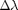

Arc-length control method (Lam & Morley, 1992)
Contents
Notation and references
The notation followed here and in the following MATLAB codes:
- arc_length_Lam_Morley.m
- arc_length_Lam_Morley_modified.m
conforms to that used by Lam & Morley in the following reference:
Lam, W. and Morley, C. (1992). ”Arc-Length Method for Passing Limit Points in Structural Calculation.” J. Struct. Eng., 118(1), 169–185. This reference is denoted as [6] inside the text of the above codes.
Algorithms implemented
- Arc length control method as described by Lam & Morley (1992)
- Modified version of the above method which directs the search towards , where is the load factor.
help arc_length_Lam_Morley %1 help arc_length_Lam_Morley_modified %2
Arc-length control method (Lam & Morley, 1992)
Description
The equation functn(#p#)=#lambda#*#q# is solved for #p#, where
#lambda# (load factor) is given as a result along with each root
(#p#), with #q# not equal to 0. If the equation functn(#p#)=0 is to
be solved, #q# and #functn# are redefined such that
functn(#p#)+#q#=#q#.
The method used is described in Lam & Morley (1992): "Arc-Length
Method for Passing Limit Points in Structural Calculation" according
to the flowchart of Figure 3, p.178.
Notation in this code conforms to that used in the above paper.
Required input arguments
#functn# is the function handle at the left hand side of the equation
to be solved. The definition of #functn# must be of the type:
[#f#,#J#]=functn(#p#), where #f# ([#dim# x 1]) is the value of
#functn# at #p# ([#dim# x 1]) and #J# ([#dim# x #dim#]) is the value
of the Jacobian matrix of #functn# at #p#.
#q# ([#dim# x 1]) is the right hand side of the equation
functn(#p#)=#lambda#*#q#.
#p0# ([#dim# x 1]) is the starting point of the solution.
Optional input arguments
#maxIINCS# (scalar) is the number of equilibrium points desired.
Default value is 10.
#lambda0# (scalar) is the initial load factor. Default value
is 0.
#Deltalambda# (scalar) is the initial load increment. Default value
is 1.
#IITERmax# (scalar) is the maximum number of iterations permitted for
each converged point. If convergence is not achieved until the
maximum iteration the procedure stops and accepts as equilibrium
point that calculated at the last iteration. Default value is 20, as
recommended by Lam & Morley (1992).
#Ide# (scalar) is the desired number of iterations to each converged
point. Default value is 1.
#tol# (scalar) is the tolerance for convergence criterion (eq. 20) in
[6] for #e# and #h#. Default value is 0.00005.
#KTup# (scalar) is the stiffness matrix updater (number of iterations
after which the tangent stiffness matrix is updated). For #KTup# = 1
the algorithm implemented is Full Arc-Length method. For #KTup# = Inf
the algorithm implemented is Initial Stiffness Arc-Length method.
Default value is 1.
#dettol# (scalar) is the tolerance for singularity of Jacobian (#J#).
Default value is 1e-4.
Output arguments
#p_out# ([#dim# x #maxIINCS#]) roots of the equation being solved.
#lambda_out# ([1 x #maxIINCS#]) are the load factors (one per
increment). The roots of the equation to be solved correspond to
#lambda_out#=1 (or a feasible value as closest as possible to 1).
#iter_out# ([1 x #maxIINCS#]) number of iterations for each
increment.
Parents (calling functions)
None.
Children (called functions)
None.
__________________________________________________________________________
Copyright (c) 09-Mar-2014
George Papazafeiropoulos
First Lieutenant, Infrastructure Engineer, Hellenic Air Force
Civil Engineer, M.Sc., Ph.D. candidate, NTUA
Email: gpapazafeiropoulos@yahoo.gr
Website: http://users.ntua.gr/gpapazaf/
Modified arc-length control method (Lam & Morley, 1992)
Description
The equation functn(#p#)=#lambda#*#q# is solved for #p#, where
#lambda# (load factor) is given as a result along with each root
(#p#), with #q# not equal to 0. If the equation functn(#p#)=0 is to
be solved, #q# and #functn# are redefined such that
functn(#p#)+#q#=#q#.
The method used is described in Lam & Morley (1992): "Arc-Length
Method for Passing Limit Points in Structural Calculation" according
to the flowchart of Figure 3, p.178, with a minor modification so
that the solution procedure is directed towards #lambda#=1.
Notation in this code conforms to that used in the above paper.
Required input arguments
#functn# is the function handle at the left hand side of the equation
to be solved. The definition of #functn# must be of the type:
[#f#,#J#]=functn(#p#), where #f# ([#dim# x 1]) is the value of
#functn# at #p# ([#dim# x 1]) and #J# ([#dim# x #dim#]) is the value
of the Jacobian matrix of #functn# at #p#.
#q# ([#dim# x 1]) is the right hand side of the equation
functn(#p#)=#lambda#*#q#.
#p0# ([#dim# x 1]) is the starting point of the solution.
Optional input arguments
#maxIINCS# (scalar) is the number of equilibrium points desired.
Default value is 10.
#lambda0# (scalar) is the initial load factor. Default value
is 0.
#Deltalambda# (scalar) is the initial load increment. Default value
is 1.
#IITERmax# (scalar) is the maximum number of iterations permitted for
each converged point. If convergence is not achieved until the
maximum iteration the procedure stops and accepts as equilibrium
point that calculated at the last iteration. Default value is 20, as
recommended by Lam & Morley (1992).
#Ide# (scalar) is the desired number of iterations to each converged
point. Default value is 1.
#tol# (scalar) is the tolerance for convergence criterion (eq. 20) in
[6] for #e# and #h#. Default value is 0.00005.
#KTup# (scalar) is the stiffness matrix updater (number of iterations
after which the tangent stiffness matrix is updated). For #KTup# = 1
the algorithm implemented is Full Arc-Length method. For #KTup# = Inf
the algorithm implemented is Initial Stiffness Arc-Length method.
Default value is 1.
#dettol# (scalar) is the tolerance for singularity of Jacobian (#J#).
Default value is 1e-4.
Output arguments
#p_out# ([#dim# x #maxIINCS#]) roots of the equation being solved.
#lambda_out# ([1 x #maxIINCS#]) are the load factors (one per
increment). The roots of the equation to be solved correspond to
#lambda_out#=1 (or a feasible value as closest as possible to 1).
#iter_out# ([1 x #maxIINCS#]) number of iterations for each
increment.
Parents (calling functions)
None.
Children (called functions)
None.
__________________________________________________________________________
Copyright (c) 09-Mar-2014
George Papazafeiropoulos
First Lieutenant, Infrastructure Engineer, Hellenic Air Force
Civil Engineer, M.Sc., Ph.D. candidate, NTUA
Email: gpapazafeiropoulos@yahoo.gr
Website: http://users.ntua.gr/gpapazaf/
Equations solved
The following equations are solved for and
Function definitions
Two functions are utilized for the arc-length procedure:
The first function (, defined in the file function4.m ), needed to solve equation (1) is a cubic polynomial with the following properties:
- Function value:
- Function jacobian (derivative):
- Passes through the origin:
The second function (, defined in the file function3.m ), needed to solve equation (2) is a nonlinear smooth function with the following properties:
- Function value:
- Function jacobian:
Function coding
- For function :
function [f,J]=function4(x) % Function output (1-by-1) f=x^3-57/8*x^2+51/4*x; % Function Jacobian output (1-by-1) J=3*x^2-57/4*x+51/4; end
- For function :
function [f,J]=function3(x) % Function output column vector (2-by-1) f1 = x(1)^2 + x(2)^2 - 49; f2 = x(1)*x(2) -24; f = [f1;f2]; % Function Jacobian output matrix (2-by-2) J=[ 2*x(1), 2*x(2); x(2), x(1)]; end
Initial definitions
In the subsequent code the following initial definitions are made (in the order presented below):
- Define function
- Define function
- Set right hand side () of equation (1)
- Set right hand side () of equation (2)
- Set starting point () for solution of equation (1)
- Set starting point () for solution of equation (2)
- Set number of increments desired
- Set initial value of
- Set initial value of 
- Set maximum number of iterations permitted per increment
- Set number of iterations desired to each converged point ()
- Set number of iterations desired to each converged point () for the modified Lam-Morley algorithm and solution of equation (2)
- Set tolerance for convergence () for the solution of equation (1). Typical values range from 1/1000 to 1/500
- Set tolerance for convergence () for the solution of equation (2). Typical values range from 1/1000 to 1/500
- Set the number of iterations every which the stiffness matrix of the problem is updated. KTup=1 corresponds to the full arc length method
- Set the tolerance for determining if the stiffness matrix is singular (this is true if its determinant is below dettol)
functn1=@function4; %1 functn2=@function3; %2 q1=5; %3 q2=[1;1]; %4 p01=0.1; %5 p02=[4;6]; %6 maxIINCS=10; %7 lambda0=0; %8 Deltalambda=1; %9 IITERmax=20; %10 Ide=1; %11 Idemod2=5; %12 tol=5e-5; %13 tol2=2e-3; %14 KTup=1; %15 dettol=1e-4; %16
Applications
- Default application of the arc length control method as described by Lam & Morley (1992) to solve equation (1)
- Default application of the modified version of the Lam & Morley (1992) arc length control method to solve equation (1)
- Non-default application of the arc length control method as described by Lam & Morley (1992) to solve equation (1)
- Non-default application of the modified version of the Lam & Morley (1992) arc length control method to solve equation (1)
- Default application of the arc length control method as described by Lam & Morley (1992) to solve equation (2)
- Default application of the modified version of the Lam & Morley (1992) arc length control method to solve equation (2)
- Non-default application of the arc length control method as described by Lam & Morley (1992) to solve equation (2)
- Non-default application of the modified version of the Lam & Morley (1992) arc length control method to solve equation (2)
[p_out1,lambda_out1,iter_out1] = arc_length_Lam_Morley(functn1,q1,p01); %1 Result1=[p_out1',lambda_out1',iter_out1'] %1 [p_out2,lambda_out2,iter_out2] = arc_length_Lam_Morley_modified(functn1,q1,p01); %2 Result2=[p_out2',lambda_out2',iter_out2'] %2 [p_out3,lambda_out3,iter_out3] = arc_length_Lam_Morley(functn1,q1,p01,maxIINCS,lambda0,Deltalambda,IITERmax,Ide,tol,KTup,dettol); %3 Result3=[p_out3',lambda_out3',iter_out3'] %3 [p_out4,lambda_out4,iter_out4] = arc_length_Lam_Morley_modified(functn1,q1,p01,maxIINCS,lambda0,Deltalambda,IITERmax,Ide,tol,KTup,dettol); %4 Result4=[p_out4',lambda_out4',iter_out4'] %4 [p_out5,lambda_out5,iter_out5] = arc_length_Lam_Morley(functn2,q2,p02); %5 Result5=[p_out5',lambda_out5',iter_out5'] %5 [p_out6,lambda_out6,iter_out6] = arc_length_Lam_Morley_modified(functn2,q2,p02); %6 Result6=[p_out6',lambda_out6',iter_out6'] %6 [p_out7,lambda_out7,iter_out7] = arc_length_Lam_Morley(functn2,q2,p02,maxIINCS,lambda0,Deltalambda,IITERmax,Ide,tol2,KTup,dettol); %7 Result7=[p_out7',lambda_out7',iter_out7'] %7 [p_out8,lambda_out8,iter_out8] = arc_length_Lam_Morley_modified(functn2,q2,p02,maxIINCS,lambda0,Deltalambda,IITERmax,Idemod2,tol2,KTup,dettol); %8 Result8=[p_out8',lambda_out8',iter_out8'] %8
Result1 =
0.5403 0.9934 2.0000
0.9807 1.3189 2.0000
1.2522 1.3514 2.0000
1.4420 1.3137 2.0000
1.5824 1.2594 2.0000
1.6590 1.2217 2.0000
1.7300 1.1822 2.0000
1.7636 1.1621 2.0000
1.7992 1.1399 2.0000
1.8149 1.1298 2.0000
Result2 =
0.5403 0.9934 2.0000
0.9807 1.3189 2.0000
1.2522 1.3514 2.0000
1.4420 1.3137 2.0000
1.5824 1.2594 2.0000
1.6590 1.2217 2.0000
1.7300 1.1822 2.0000
1.7636 1.1621 2.0000
1.7992 1.1399 2.0000
1.8149 1.1298 2.0000
Result3 =
0.5403 0.9934 2.0000
0.9807 1.3189 2.0000
1.2522 1.3514 2.0000
1.4420 1.3137 2.0000
1.5824 1.2594 2.0000
1.6590 1.2217 2.0000
1.7300 1.1822 2.0000
1.7636 1.1621 2.0000
1.7992 1.1399 2.0000
1.8149 1.1298 2.0000
Result4 =
0.5403 0.9934 2.0000
0.9807 1.3189 2.0000
1.2522 1.3514 2.0000
1.4420 1.3137 2.0000
1.5824 1.2594 2.0000
1.6590 1.2217 2.0000
1.7300 1.1822 2.0000
1.7636 1.1621 2.0000
1.7992 1.1399 2.0000
1.8149 1.1298 2.0000
Result5 =
5.8220 3.7946 -1.3961 20.0000
5.5474 4.0874 -1.3812 20.0000
5.5973 4.0344 -1.3859 20.0000
5.5888 4.0483 -1.3851 20.0000
5.5888 4.0489 -1.3714 2.0000
5.5888 4.0489 -1.3713 2.0000
5.5888 4.0489 -1.3713 2.0000
5.5888 4.0489 -1.3712 1.0000
5.5888 4.0489 -1.3712 2.0000
5.5888 4.0489 -1.3713 1.0000
Result6 =
5.3339 4.8149 2.1037 20.0000
5.0730 5.0229 1.8003 20.0000
5.0697 5.0263 1.7341 20.0000
5.0700 5.0276 1.7193 20.0000
5.0687 5.0292 1.7224 20.0000
5.0684 5.0296 1.7232 20.0000
5.0683 5.0296 1.7234 20.0000
5.0683 5.0296 1.7234 20.0000
5.0683 5.0297 1.7234 20.0000
5.0683 5.0297 1.7234 20.0000
Result7 =
5.8220 3.7946 -1.3961 20.0000
5.5928 4.0375 -1.4193 11.0000
5.5939 4.0345 -1.4312 3.0000
5.5936 4.0352 -1.4289 3.0000
5.5946 4.0347 -1.4252 2.0000
5.5938 4.0356 -1.4251 2.0000
5.5930 4.0364 -1.4257 1.0000
5.5922 4.0372 -1.4264 1.0000
5.5926 4.0367 -1.4264 2.0000
5.5934 4.0357 -1.4260 1.0000
Result8 =
5.3339 4.8149 2.1037 20.0000
5.0388 4.9887 1.3831 20.0000
5.0226 4.9892 1.1042 20.0000
5.0137 4.9870 1.0052 6.0000
5.0136 4.9869 1.0038 2.0000
5.0134 4.9867 1.0006 2.0000
5.0131 4.9865 0.9971 2.0000
5.0828 4.9136 0.9763 15.0000
5.0596 4.9375 0.9803 2.0000
5.0044 4.9959 1.0022 3.0000
Copyright
Copyright (c) 09-Mar-2014 by George Papazafeiropoulos
- First Lieutenant, Infrastructure Engineer, Hellenic Air Force
- Civil Engineer, M.Sc., Ph.D. candidate, NTUA
- Email: gpapazafeiropoulos@yahoo.gr
- Website: http://users.ntua.gr/gpapazaf/